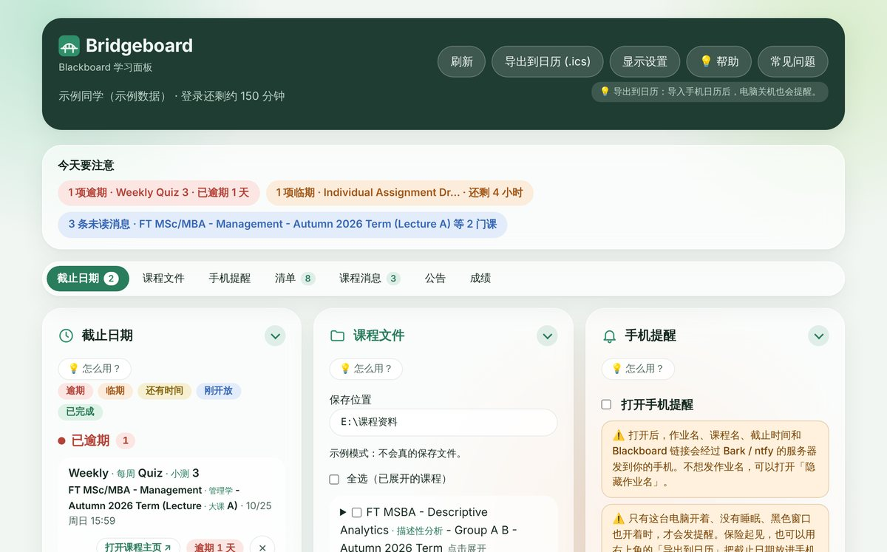
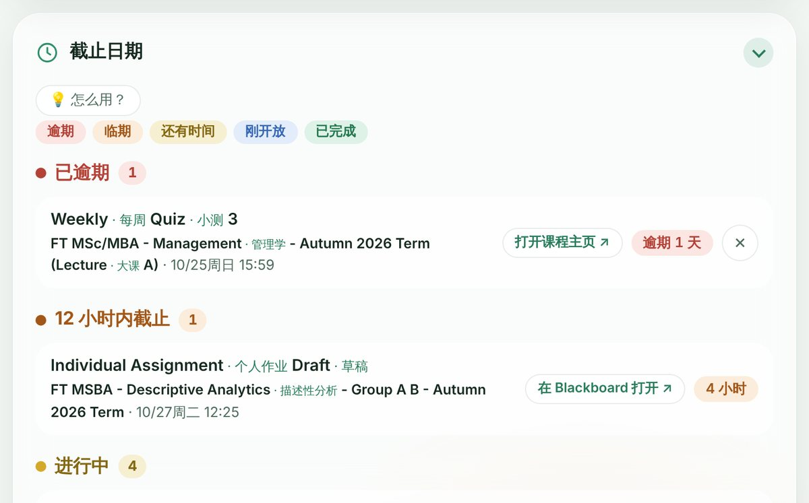
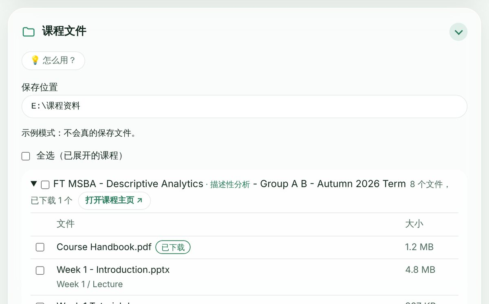
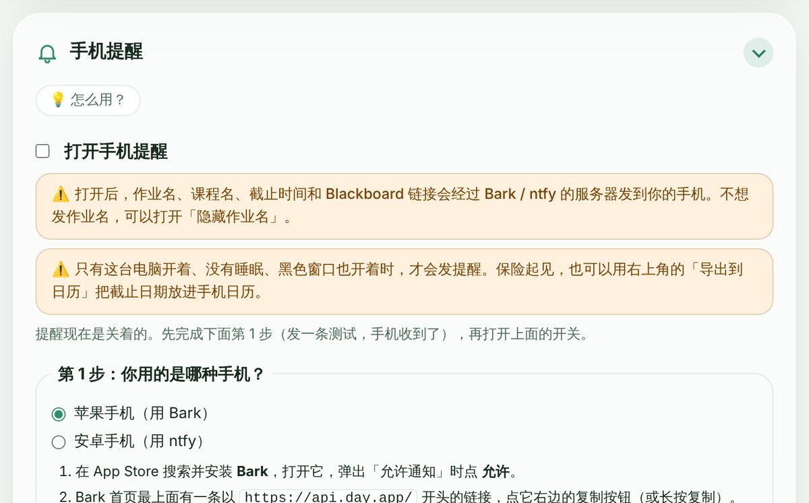
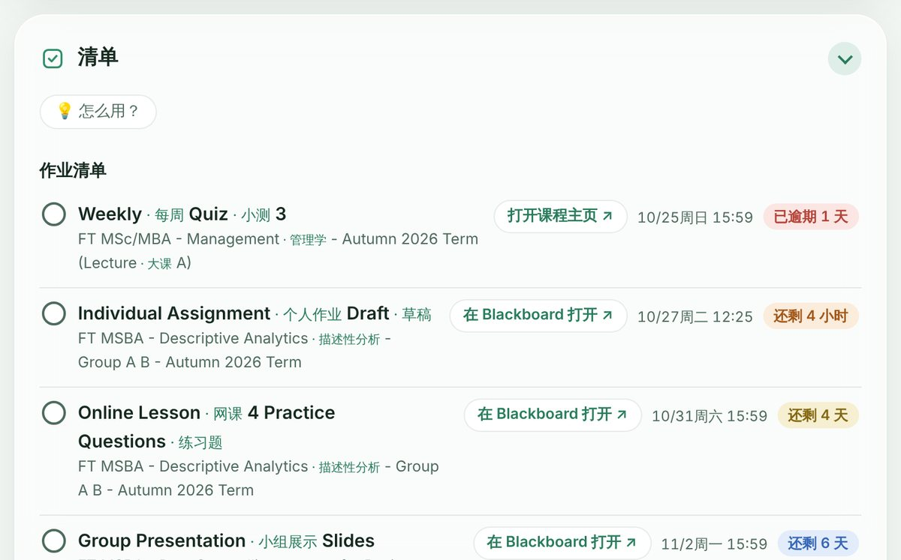
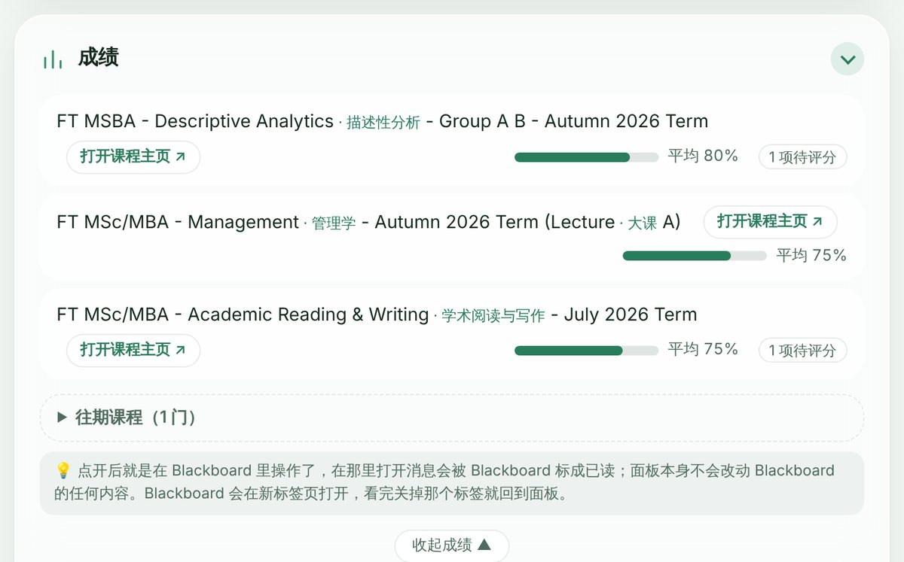

你的专属 Blackboard 看板 Your personal Blackboard dashboard
Your personal Blackboard dashboard你的专属 Blackboard 看板
- 截止提醒Deadlines
- 文件下载File downloads
- 手机提醒Phone alerts
- 清单Checklist
- 消息Messages
- 公告Announcements
- 成绩Grades
给留学生的 Blackboard 学习面板。所有课程的东西放在一个页面上，不用再一门一门课点进去找。 A Blackboard dashboard for international students. Everything from every course on one page, instead of clicking through each one.
约 34 MB · 解压后双击 start.bat 就能用，不用安装其他东西 · 三步装好 About 34 MB · Unzip and double-click start.bat; nothing else to install · Set up in 3 steps
Bridgeboard 目前只有 Windows 版，Mac 版正在做。请在你的 Windows 电脑上打开 getboundly.com 下载。 Bridgeboard is Windows-only for now; a Mac version is on the way. Open getboundly.com on your Windows computer to download it.






截图来自示例模式，不是真实账号Screenshots use demo data
装上以后，它帮你做这些 What it does for you
七件事，一个页面。面板里每一块都能收起来，只看你需要的。 Seven things on one page. Every part can be folded away so you only see what you need.
五种颜色的截止提醒Deadlines in five colours
所有课程的作业按颜色排好，一眼看出哪个最急。每项旁边有「在 Blackboard 打开 ↗」，点一下直接到作业页。 Every assignment from every course, sorted by colour so the urgent one stands out. "在 Blackboard 打开 ↗" next to each one takes you straight there.
课程文件一键下载Course files in one click
勾选课程，选一个文件夹（U 盘也行），课件按课程自动整理好。已经下过的会跳过，还能导出给 AI 用的文字版。 Tick the courses, pick a folder (a USB drive works too) and the files arrive sorted by course. Files you already have are skipped, and you can export a text copy for AI tools.
快到期时提醒到手机Alerts on your phone
iPhone 用 Bark，安卓用 ntfy。默认关闭，你自己打开、测试成功后才会发。也可以导出到手机日历，电脑关机时也会提醒。 Bark on iPhone, ntfy on Android. Off by default; it only sends after you switch it on and a test reaches your phone. You can also export deadlines to your phone’s calendar.
清单Checklist
作业自动进清单，交了自动打勾。也能加自己的待办，改时间、删掉都很方便，用起来像手机上的提醒事项。 Assignments join your checklist and tick themselves when submitted. Add your own to-dos too; it works like the Reminders app on your phone.
课程消息和公告Messages and announcements
老师和同学发的课程消息、各门课的公告集中在一处，未读的会标出来，不会漏看。 Course messages and announcements from every course in one place, with unread ones marked so nothing slips by.
成绩Grades
每门课的成绩用绿色进度条显示，平均分和等待评分的项目一眼看清。以前学期的课程自动收进「往期课程」。 Grades for each course as green bars, with averages and items still waiting to be marked. Earlier terms fold away by themselves.
适用于使用 Blackboard Learn Ultra 的学校：登录后网址里有 /ultra 就是。
Works with schools on Blackboard Learn Ultra: if the address has /ultra after you sign in, you're set.
三步装好 Set up in three steps
下载Download
点上面的「下载 Windows 版」。 Click "Download for Windows" above.
浏览器如果说「不常下载」，点「保留」。 If your browser says it's not commonly downloaded, choose "Keep".
先解压Unzip first
右键压缩包，选「全部解压缩」，放到任意文件夹或 U 盘。 Right-click the zip and choose "Extract All", into any folder or a USB drive.
一定要先解压。直接在压缩包里双击是用不了的。 Unzip first. Double-clicking inside the zip won't work.
双击 start.batDouble-click start.bat
会出现一个黑色窗口，用的时候别关它。面板会在浏览器里打开，按提示登录学校账号。 A black window opens; keep it open while you use Bridgeboard. The dashboard opens in your browser; sign in to your school account.
Windows 提示「已保护你的电脑」时，点「更多信息」，再点「仍要运行」。 If Windows says "Windows protected your PC", click "More info", then "Run anyway".
要钱吗？Does it cost anything?
不要。现在的所有功能都免费，代码公开在 GitHub 上。 No. Every current feature is free, and the code is public on GitHub.
我的学校账号和密码安全吗？Is my school login safe?
登录是在学校自己的网页上完成的，Bridgeboard 看不到你的密码。登录信息和课程数据只存在你自己的电脑上，不会发给我们。唯一的例外是你自己打开的手机提醒：作业名和截止时间会经过 Bark 或 ntfy 发到你的手机。 You sign in on your school's own page, so Bridgeboard never sees your password. Your login and course data stay on your computer and never reach us. The one exception is phone alerts, if you switch them on: assignment names and due times pass through Bark or ntfy to your phone.
用 Mac 能用吗？Does it work on a Mac?
目前只有 Windows 版，Mac 版正在做。想第一时间知道，可以在页面最下面订阅。 Not yet: it's Windows-only for now, and a Mac version is on the way. Subscribe at the bottom of this page to hear when it's ready.
那个黑色窗口能关吗？Can I close the black window?
用的时候别关，关掉它面板和手机提醒都会停。用完可以关，下次再双击 start.bat 就行。 Not while you're using it: closing it stops the dashboard and phone alerts. Close it when you're done and double-click start.bat next time.
有新版本了怎么升级？How do I update?
回到这里重新下载，解压到任意位置就行。你的清单、设置和登录都会自动保留。 Download again from here and unzip anywhere. Your checklist, settings and sign-in are kept automatically.
全部常见问题 →All questions → · 遇到问题写信到 feedback@getboundly.com Stuck? Write to feedback@getboundly.com
隐私和安全说明Privacy and safety
- 只在你的电脑上运行Runs only on your computer 面板只在本机地址 127.0.0.1 上运行，别的电脑、手机和网页都连不上。你的课程、作业和清单存在你自己电脑里，我们收不到，也没有自己的服务器。The panel listens on 127.0.0.1 only, so other computers, phones and web pages cannot reach it. Your courses, assignments and checklist stay on your own computer. We receive none of it and run no server of our own.
- 只读取，不替你做任何事Read-only 它只读取 Blackboard 上的内容，不能交作业、不能做测验，也不会改动你账号里的任何东西。It only reads from Blackboard. It cannot submit work or take quizzes, and it changes nothing in your account.
- 登录在学校自己的网页上You sign in on your school’s own page 登录时会打开一个单独的浏览器窗口，你在学校的登录页输入账号密码，Bridgeboard 看不到你的密码。登录状态加密保存在你电脑上（文件夹 .blackboard-mcp），窗口用完自动关闭。Signing in opens a separate browser window on your school’s own sign-in page. Bridgeboard never sees your password. The session is stored encrypted on your computer (the .blackboard-mcp folder) and the window closes when done.
- 只有手机提醒会发出去Only phone alerts leave your computer 手机提醒默认关闭。只有你自己打开、测试成功之后，才会把作业名、课程名、截止时间和链接经 Bark（api.day.app）或 ntfy（ntfy.sh）发到你的手机。打开「隐藏作业名」就连名字和链接都不发。登录信息和消息内容永远不会发出。Phone alerts are off by default. Only after you switch them on and a test reaches your phone are assignment and course names, due times and links sent through Bark (api.day.app) or ntfy (ntfy.sh). Turn on 隐藏作业名 to send no names or links. Sign-in data and message text are never sent.
- 有几件事要你自己注意A few things are up to you 不要把 .blackboard-mcp 文件夹或复制的 cURL 发给任何人，它们相当于你的登录。ntfy 的频道名也像密码一样别外传。Bridgeboard 不是学校官方工具，使用前可以看看学校的 IT 使用规定。Never share the .blackboard-mcp folder or a copied cURL: they work like your login. Keep your ntfy topic private like a password. Bridgeboard is not an official school tool; check your school’s IT acceptable-use policy.
- 代码公开，这个网站不追踪你Open code, and no tracking of you here 全部代码公开在 GitHub 上，谁都可以检查它做了什么。面板里的「意见反馈」只是打开你自己的邮件软件。这个网站用 Umami 统计访问人数和下载次数，不用 Cookie、不收集个人信息（你的浏览器只记住中英文选择）；订阅只是用你的邮箱给我们写一封信。All the code is public on GitHub for anyone to check. 意见反馈 in the panel only opens your own mail app. This website counts visits and downloads with Umami, with no cookies and no personal data (your browser only remembers your language choice); subscribing just sends us an email from your own mail app.
GitHub 上的完整说明 →Full details on GitHub → · 有疑问写信到 feedback@getboundly.com Questions? Write to feedback@getboundly.com
从东方出发 · 走向世界 FROM THE EAST, TOWARD THE WORLD
让表达,真实抵达。 Where expression truly arrives.
我们和用户一起,在人与人之间架桥,把理解的路一段一段修平——让真实的意思,真实地抵达。 Together with our users, we build bridges between people and pave the road of understanding — one step at a time. So that what you truly mean, truly arrives.
我们在做的事 What we're building
Boundly 的所有产品,本质上都是同一种东西:摩擦消除器。Bridgeboard 已经能用,Bridgit 正在建。 Every Boundly product is, at heart, the same thing: a friction remover. Bridgeboard is ready to use; Bridgit is under construction.
一个让"我想表达的意思 = 你接收到的意思"成为可能的社交平台。不是又一个翻译软件——每个人都带着一个自己的小 AI 进入对话,像笔友,不像速配。 A social platform where what you mean is what they receive. Not another translation app — everyone brings their own small AI into the conversation. Pen pals, not speed dating.
双层表达 Two-layer expression
每条消息可以有两层:你的原话永远在上,AI 帮你抵达的那一层,用不用、给不给对方看,由你决定。AI 是辅助表达,不是代替表达。 Every message can carry two layers: your own words always on top, and an optional AI layer that helps them arrive. Whether to use it, whether to show it — your call. AI assists expression; it never replaces it.
可问责的去身份化 Accountable de-identification
实名等于被监控,匿名等于不负责任——Bridgit 走第三条路:你不知道他是谁,但你知道他说的话,他要负责。 Real names mean surveillance; anonymity means no accountability. Bridgit takes a third path: you don't know who they are, but you know they stand behind every word.
笔友式异步匹配 Pen-pal matching
别人的匹配是电话,Bridgit 的匹配是信箱。你先说话,对方上线后回复。等待不是缺陷,是这个产品的性格。 Other apps match like a phone call; Bridgit matches like a mailbox. You write first; they reply when they arrive. Waiting isn't a flaw — it's this product's character.
我们守住的边界 The boundaries we hold
边界不是为了把人挡在外面,是为了让走在路上的人走得更稳一点。 Boundaries aren't for keeping people out. They're so that those walking the road can walk it more steadily.
不锁付费墙No paywall on what matters
任何能让你得到核心价值的功能,都不会因为不付费而不可用。我们卖的是好用、省时、能力的扩展——不是被卡住的功能。 Nothing that delivers core value will ever be locked behind payment. We sell usefulness, time saved, and expanded ability — never features held hostage.
不卖数据We don't sell your data
你不是流量,不是数据,你是真正的人。你的数据可以随时导出,你想走,我们打开门。 You are not traffic. You are not data points. You are a person. Your data is always exportable — and if you want to leave, we hold the door.
不用推送陷阱No push traps
没有红点焦虑,没有信息流陷阱,没有"再刷一下"的钩子。如果你打开我们产品的时间在变短,而生活在变好——那是我们最大的成功。 No red-dot anxiety, no infinite feeds, no "one more scroll" hooks. If you spend less time in our products while your life gets better — that is our greatest success.
错了公开改Mistakes, corrected in public
我们一定会犯错。我们承诺的不是永远正确,而是:错了就承认,承认了就改,改了就告诉所有人。修路日志会公开记录每一次修正。 We will make mistakes. What we promise is not perfection, but this: admit it, fix it, and tell everyone. Our public road log records every correction.
门一直开着,节奏由你决定。 The door stays open.
The pace is yours.
The door stays open. The pace is yours. 门一直开着,节奏由你决定。
保持联系 Stay in touch
想在 Bridgeboard 出新版、或 Boundly 有新产品时收到一封信？点下面的按钮，会打开你的邮件程序，发出这封信就算订阅好了。只用来通知新版本和新产品，不卖、不乱发，回信说「退订」就停。 Want a note when Bridgeboard updates or Boundly ships something new? The button opens your email app; send that message and you're subscribed. Used only for release and product news, never sold, and a reply saying "unsubscribe" stops it.